Responsive Design And Dataviz
Tyler Machado, hbr.org
@tylermachado / tylermachado.com
principles of mobile dataviz
- limited real estate
- vertical orientation
- touch/hover events are difficult
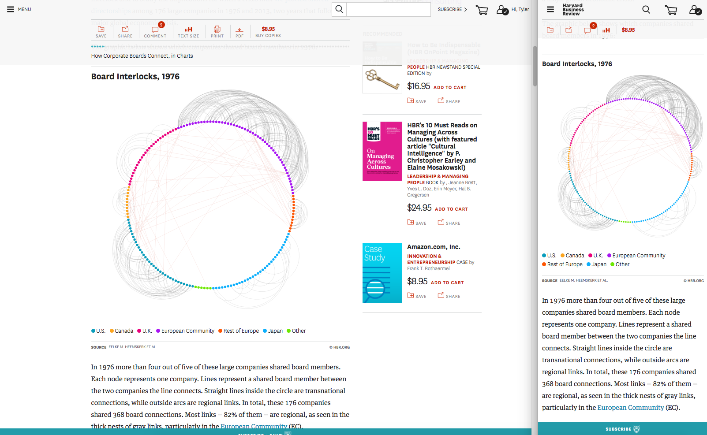
(print version)
 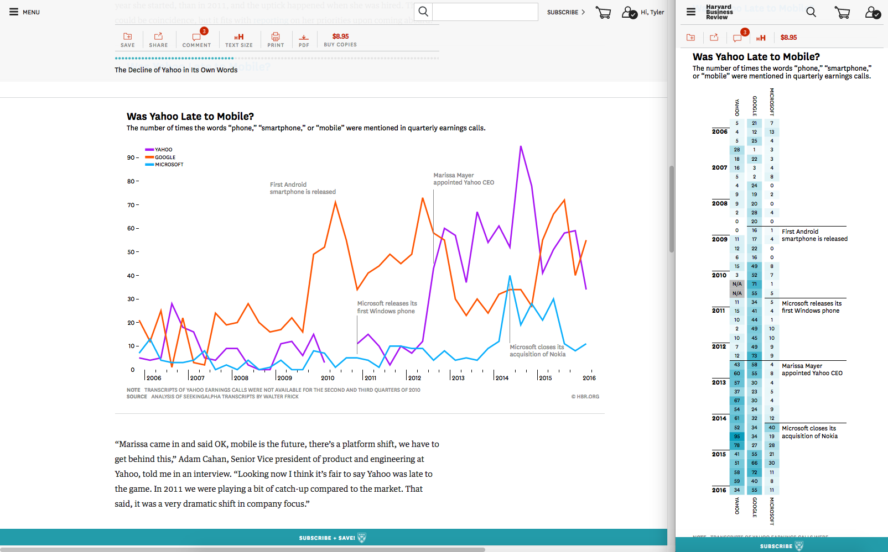
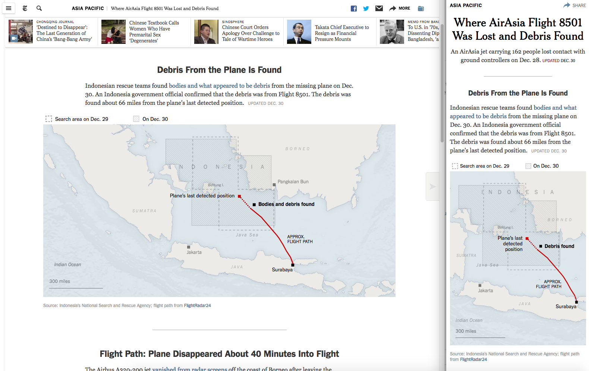
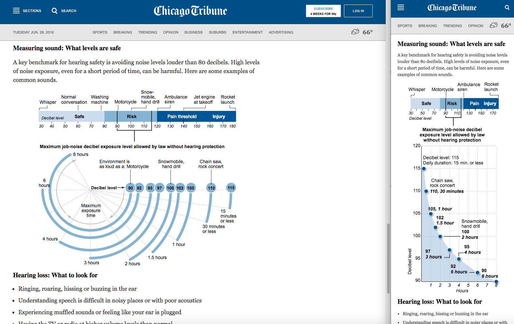
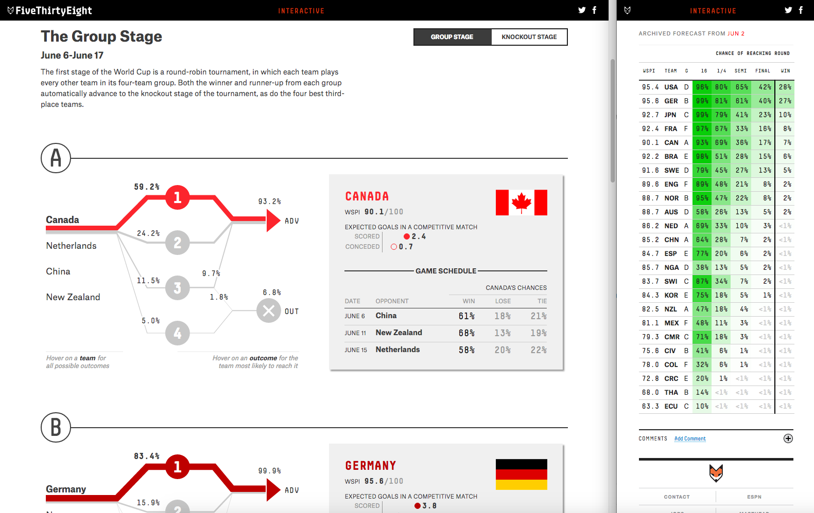
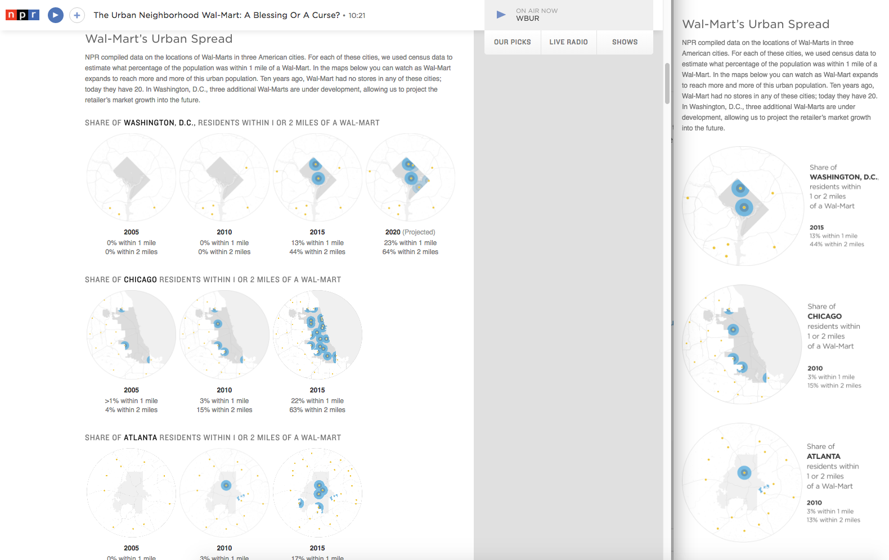
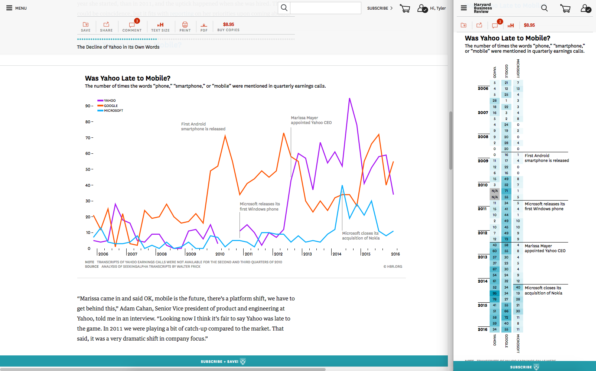
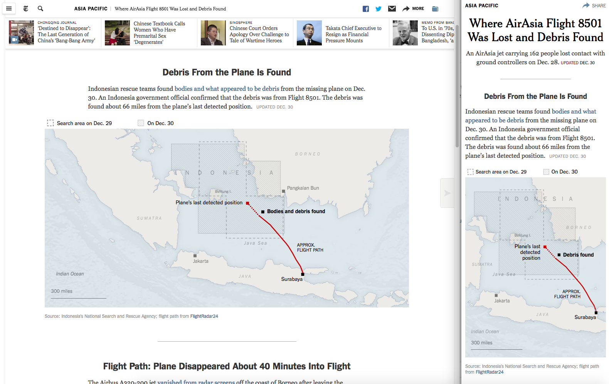
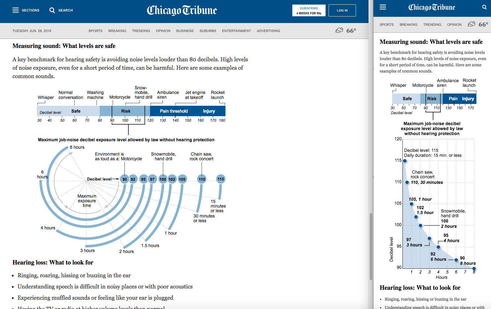
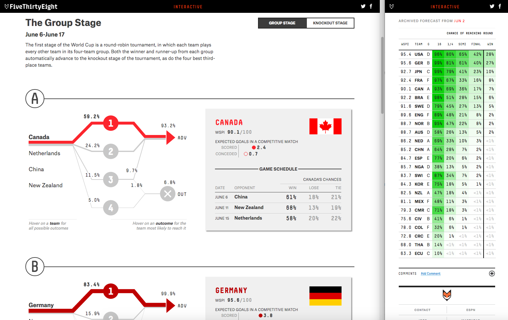
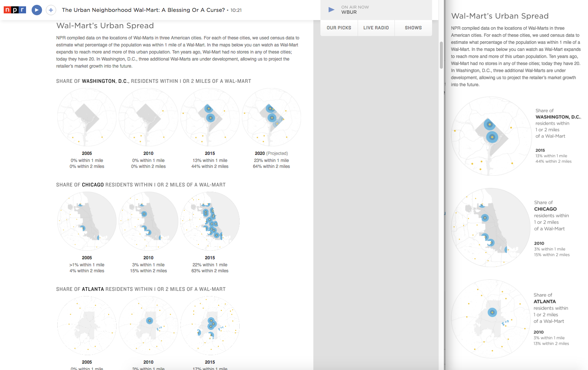
AI2HTML
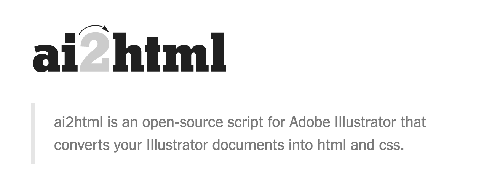
Pym.js
Javascript : D3.js
function render() {
d3.select("#chartcontainer").selectAll("*").remove();
width = window.innerWidth;
console.log(window.innerWidth);
if (window.innerWidth > 768) {
drawLineChart();
pymChild.sendHeight();
} else {
drawHeatmap();
pymChild.sendHeight();
}
}
render();
window.onresize = render;
thanks, here's a chill dog pic